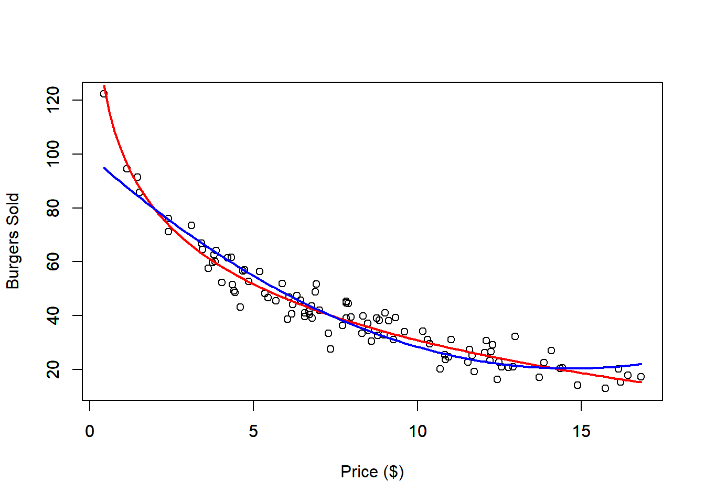
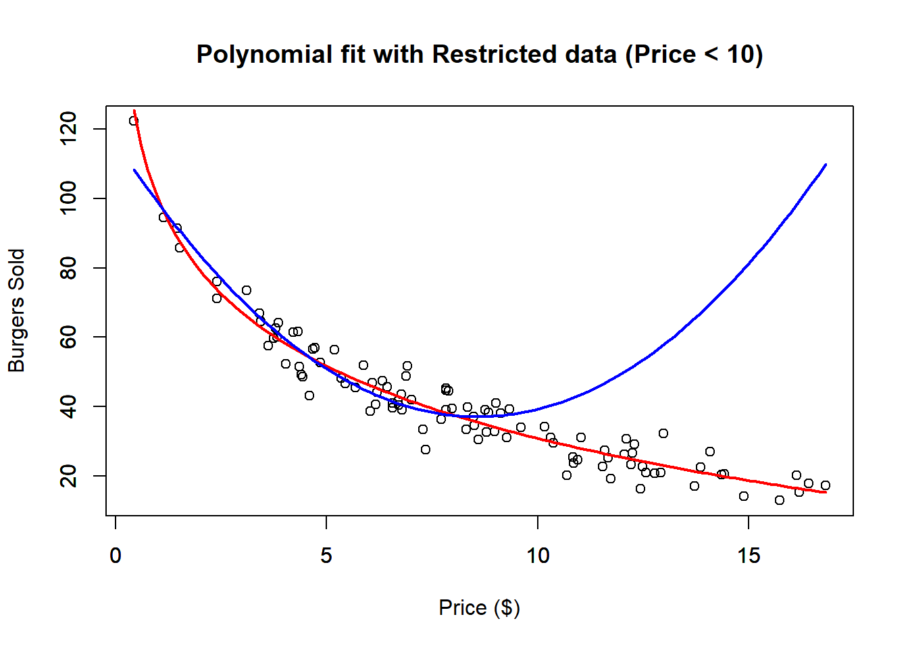

5 Polynomial Regression
Polynomial regression is an extension of linear regression where the relationship between the independent variable \(x\) and the dependent variable \(y\) is modeled as an \(n\)-th degree polynomial. Instead of fitting a straight line, it fits a curve that can capture more complex patterns in the data.
In polynomial regression, the model takes the form:
\[ y = \beta_0 + \beta_1 x + \beta_2 x^2 + \dots + \beta_k x^k + \epsilon \]
Where: - \(y\) is the dependent variable, - \(x\) is the independent variable, - \(\beta_0, \beta_1, \dots, \beta_n\) are the coefficients, - \(\epsilon\) is the error term.
Polynomial regression is useful when the data exhibits a nonlinear trend that cannot be well approximated by a straight line. By increasing the degree of the polynomial, the model can fit more complex patterns, though caution is needed to avoid overfitting.
There are two main scenarios for using polynomial regression:
The underlying process is inherently polynomial. A polynomial provides a good approximation for the relationship. If you know that the phenomenon you’re modeling follows a polynomial function, there’s no need to worry about overfitting. You can confidently use the polynomial degree that best fits the known relationship.
However, if you’re using polynomial regression to approximate a nonlinear relationship between the independent and dependent variables, be cautious. Overfitting can become a significant issue, particularly outside the range of the data used for model fitting, where predictions can be unreliable.
In the second scenario, it’s common to limit the polynomial degree to 2nd or 3rd order to prevent overfitting while still capturing key nonlinear patterns.
We use our Burger Data set, to see an example of using polynomial regression
to approximate a non-linear relationship. We will use a second degree polynomial
to fit the data.
dat <- read.csv("Burger Data.csv")
# Polynomial Regression Fit
outRegPol <- lm(Burgers ~ Price + I(Price^2), data = dat)
# Data Limits
xmin <- min(dat$Price)
xmax <- max(dat$Price)
ymin <- min(dat$Burgers)
ymax <- max(dat$Burgers)
# Scatter plot
plot(x = dat$Price,
y = dat$Burgers,
ylim = c(ymin, ymax),
xlim = c(xmin, xmax),
xlab = "Price ($)",
ylab = "Burgers Sold")
par(new = TRUE)
# Plots real non-linear relationship
curve(expr = 100 - 30 * log(x),
from = xmin,
to = xmax,
ylim = c(ymin, ymax),
xlim = c(xmin, xmax),
xlab = "",
ylab = "",
col = 'red',
lwd = 2)
par(new = TRUE)
# Plots approximated polynomial relationship
curve(expr = outRegPol$coefficients[1] + outRegPol$coefficients[2] * x + outRegPol$coefficients[3] * x^2,
from = xmin,
to = xmax,
ylim = c(ymin, ymax),
xlim = c(xmin, xmax),
xlab = "",
ylab = "",
col = 'blue',
lwd = 2)
The second-degree polynomial approximation provides a reasonably good fit to the data. The red line represents the true nonlinear relationship, while the blue line shows the polynomial approximation. However, if we restrict the dataset to prices below $10, the fit noticeably worsens. This demonstrates a limitation of the polynomial model: while it might fit well within certain ranges, it can lead to unrealistic predictions outside those bounds. For instance, the model might predict that burger sales will eventually rise again as prices increase, which contradicts typical market expectations.
dat <- read.csv("Burger Data.csv")
# Select only Prices bellow 10 dollars
sel <- dat$Price < 10
datRes <- dat[sel, ]
# Polynomial Regression Fit
outRegPolRes <- lm(Burgers ~ Price + I(Price^2), data = datRes)
# Data Limits
xmin <- min(dat$Price)
xmax <- max(dat$Price)
ymin <- min(dat$Burgers)
ymax <- max(dat$Burgers)
# Scatter plot
plot(x = dat$Price,
y = dat$Burgers,
ylim = c(ymin, ymax),
xlim = c(xmin, xmax),
xlab = "Price ($)",
ylab = "Burgers Sold",
main = "Polynomial fit with Restricted data (Price < 10)")
par(new = TRUE)
# Plots real non-linear relationship
curve(expr = 100 - 30 * log(x),
from = xmin,
to = xmax,
ylim = c(ymin, ymax),
xlim = c(xmin, xmax),
xlab = "",
ylab = "",
col = 'red',
lwd = 2)
par(new = TRUE)
# Plots approximated polynomial relationship
curve(expr = outRegPolRes$coefficients[1] + outRegPolRes$coefficients[2] * x + outRegPolRes$coefficients[3] * x^2,
from = xmin,
to = xmax,
ylim = c(ymin, ymax),
xlim = c(xmin, xmax),
xlab = "",
ylab = "",
col = 'blue',
lwd = 2) We can also check the \(R^2\) of the restricted fit.
##
## Call:
## lm(formula = Burgers ~ Price + I(Price^2), data = datRes)
##
## Residuals:
## Min 1Q Median 3Q Max
## -11.0809 -3.5462 -0.0635 3.0957 13.8374
##
## Coefficients:
## Estimate Std. Error t value Pr(>|t|)
## (Intercept) 116.0882 3.2929 35.254 < 2e-16 ***
## Price -18.3910 1.2519 -14.691 < 2e-16 ***
## I(Price^2) 1.0709 0.1105 9.695 4.13e-14 ***
## ---
## Signif. codes: 0 '***' 0.001 '**' 0.01 '*' 0.05 '.' 0.1 ' ' 1
##
## Residual standard error: 5.062 on 63 degrees of freedom
## Multiple R-squared: 0.9131, Adjusted R-squared: 0.9104
## F-statistic: 331.2 on 2 and 63 DF, p-value: < 2.2e-16And notice that, the \(R^2\) with the restricted data is pretty good, however we see that outside the restricted range the fit is pretty bad.
Although polynomial regression is technically a form of multivariate linear regression—since it involves multiple polynomial terms of a single independent variable—it can still be analyzed using the tools discussed in the next chapter. Despite having multiple polynomial terms, the model has only one original independent variable that has been transformed. Consequently, the relationship between the transformed variable and the dependent variable can be effectively visualized using a scatter plot.